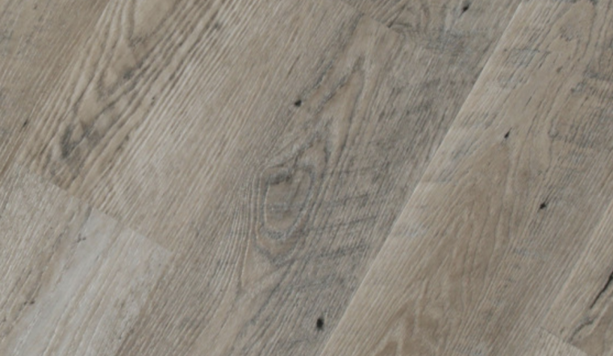

Advantages of SPC Vinyl Flooring
Many Just Floored Atlanta customers have been asking to learn more about SPC vinyl flooring. Questions range from what does it look like, is it practical and is it cost effective? Call our experts for a free no obligation quote and we can bring samples to help you decide on style and color.
SPC Vinyl is similar to WPC vinyl but is made a bit differently It is a stone plastic composite made into luxury vinyl planks. Our past customers that have had us install SPC vinyl love it's durability, large selection choices, and it's imperviousness to water. It is practically indestructible. Learn more about this great flooring choice by calling Just Floored today.
What makes up the SPC Vinyl Planks?
In constructing SPC luxury vinyl floors, the core is comprised of natural limestone powder, polyvinyl chloride, and stabilizers. It stands up to heavy traffic, water, spills, and dents. It is made of of layers consisting of:
- Top Coat Layer - The top layer is the clear sealant coating on the vinyl that helps protect the product from wear and tear caused by dents, stains, scratches and everyday use.
- Vinyl Layer - Luxury SPC vinyl floors include a thin layer of vinyl that is water resistant and includes the pattern and texture of the vinyl.
- SPC Core - The SPC core consist of limestone powder combined with stabilizers to add stability and water proofing.
- Underlayment - Some, but not all, SPC vinyl flooring have an attached underlayment to add sound attenuating benefits and buoyancy and softness.
Hundreds of Choices of Colors and Styles
SPC Luxury Vinyl Plank Flooring comes in hundreds of colors and styles to fit any style. Call us today to have one of our experts come out to your location and give you an in-home quote as well as helping you choose the style and color that goes best with your home. You will be surprised at all the great looking SPC vinyl choices. Call JustFloored, LLC at 1-855-452-2500 today.
Luxury SPC Vinyl Plank Flooring stays room temperature, and is very soft and on your feet. Vinyl planks help absorb sound and are quieter than hardwood floors or laminate floors. SPC Vinyl is great to use in wet areas because it is waterproof. The new styles look fantastic in your home and are easy on the wallet. Call JustFloored, LLC at 1-855-452-2500 today for a in-home quote.
Benefits
- Looks Great! - SPC vinyl flooring offers a large selection of colors, textures and styles.
- Very Comfortable - The SPC vinyl floor is more cushiony that other types of vinyl due to the density and thickness of the core Some SPC vinyls also have an attached underlayment for even more comfort.
- Easy to Maintain - SPC vinyl are easily cleaned with regular sweeping and mopping.
- Sound - Because of the dense core and layers, SPC vinyl planks are quiet and do not echo.
- Great Pricing - SPC vinyl plank flooring is not only good looking but economical. Contact us to learn more about SPC Vinyl plank options and choices. We can show you samples and help you make the right choice.